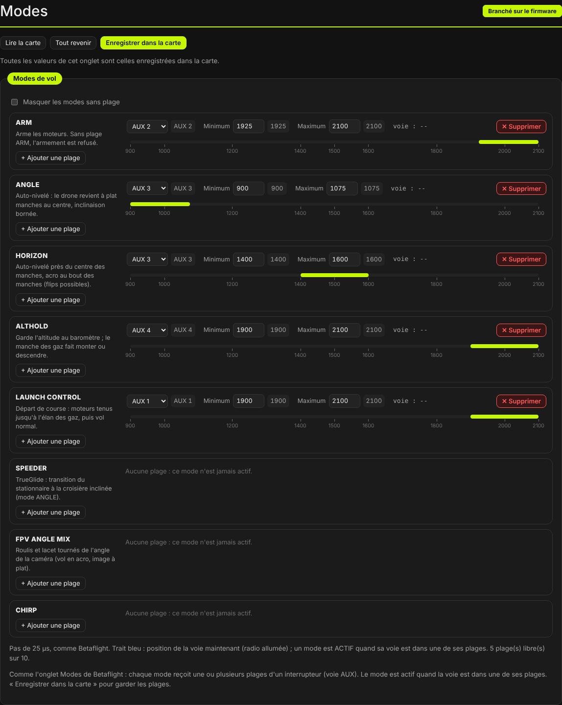
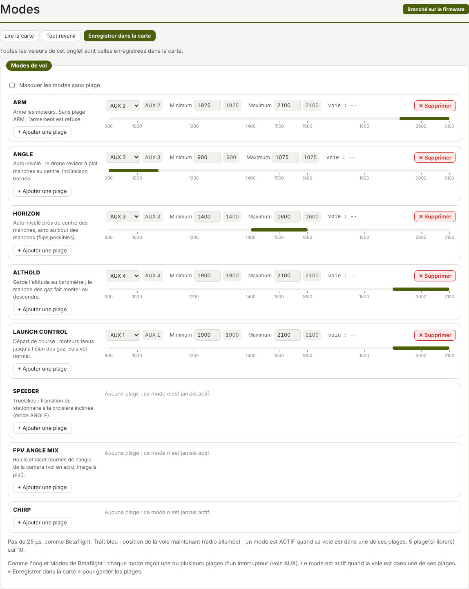

TRUEGLIDE
TRUEGLIDE Onglet Modes
L'onglet Modes relie les modes de vol aux interrupteurs de la radio. Chaque mode reçoit une ou plusieurs plages d'une voie AUX ; le mode est actif quand la voie est dans une de ses plages.


Le principe
Comme l'onglet Modes de Betaflight : une plage, c'est une voie (AUX 1 à AUX 12) et un intervalle en µs, entre 900 et 2100, par pas de 25 µs. Quand la voie entre dans l'intervalle, le mode s'active. Un mode peut avoir plusieurs plages. La carte a 10 plages en tout, partagées entre les modes.
Sans plage ARM, l'armement est refusé (sauf armement aux manches, onglet Configuration). Les plages sont vides par défaut : rien n'arme tant qu'aucune plage ARM n'est réglée. Sans ANGLE ni HORIZON actif, le drone vole en acro.
Une carte par mode
Chaque mode a sa carte : à gauche son nom, une ligne d'aide et le bouton + Ajouter une plage ; à droite ses plages, une par ligne. Une plage montre :
- la liste de la voie (AUX 1 à AUX 12) ;
- Minimum et Maximum, en µs, avec la valeur enregistrée en gris à côté ;
- « voie : » suivi de la valeur de la voie en ce moment (« -- » sans radio) ;
- le bouton ✕ Supprimer ;
- la règle de 900 à 2100 µs.
Un mode sans plage affiche « Aucune plage : ce mode n'est jamais actif. ». La case Masquer les modes sans plage les cache ; le navigateur retient ce choix.
La règle et le curseur
La règle est graduée de 900 à 2100 µs (900, 1000, 1200, 1400, 1500, 1600, 1800, 2000, 2100). La bande jaune montre la plage. Radio allumée, un trait bleu montre la position de la voie, en direct. Quand la voie est dans une plage, la carte du mode s'éclaire et l'étiquette ACTIF apparaît à côté de son nom.
Vérifié sur KarRmen le 17/10/2026 (essai B9) : trait bleu et ACTIF suivent les interrupteurs.
Ajouter, supprimer
- + Ajouter une plage sous le nom du mode : une plage s'ajoute, sur AUX 1, de 1700 à 2100 µs.
- Choisir la voie, puis régler Minimum et Maximum. Basculer l'interrupteur de la radio pour vérifier : le trait bleu doit entrer dans la bande et le mode passer ACTIF.
- Enregistrer dans la carte pour garder les plages après un redémarrage.
✕ Supprimer libère la plage. Si les 10 plages sont prises, le logiciel le dit : en supprimer une d'abord. Sous la liste, une note donne le nombre de plages libres.
Les modes XPro
| Mode | Numéro | Ce qu'il fait |
|---|---|---|
| ARM | 0 | Arme les moteurs. Sans plage ARM, l'armement est refusé. |
| ANGLE | 1 | Auto-nivelé : le drone revient à plat manches au centre, inclinaison bornée. |
| HORIZON | 2 | Auto-nivelé près du centre des manches, acro au bout des manches (flips possibles). |
| ALTHOLD | 3 | Garde l'altitude au baromètre ; le manche des gaz fait monter ou descendre. |
| LAUNCH CONTROL | 49 | Départ de course : moteurs tenus jusqu'à l'élan des gaz, puis vol normal. |
| SPEEDER | 120 | Fonction TrueGlide : transition du stationnaire à la croisière inclinée, seulement en mode ANGLE (onglet Speeder). |
| FPV ANGLE MIX | 121 | Roulis et lacet tournés de l'angle de la caméra
(fpv_mix_degrees) : vol en acro, image à plat (onglet Caméra). |
| CHIRP | 122 | Firmware 0.8.6 : balayage de fréquences, axe par axe, en stationnaire manches au centre ; un manche bougé l'arrête (Assistant de réglage). Pas encore essayé en vol. |
Les numéros sont ceux de Betaflight pour les cinq premiers ; 120, 121 et 122 sont propres à XPro.
Les plages de KarRmen
Relevées sous Betaflight 2025.12.2 (diff all du 14/10/2026) et reprises dans XPro :
| Mode | Voie | Plage (µs) |
|---|---|---|
| ARM | AUX2 (voie 6) | 1925 à 2100 |
| ANGLE | AUX3 (voie 7) | 900 à 1075 |
| HORIZON | AUX3 (voie 7) | 1400 à 1600 |
| ALTHOLD | AUX4 (voie 8) | 1900 à 2100 |
| LAUNCH CONTROL | AUX1 (voie 5) | 1900 à 2100 |
AUX3 a trois positions : bas = ANGLE, milieu = HORIZON, haut = acro (aucun mode).
La commande aux
Les plages se règlent aussi dans l'onglet Ligne de commande, au format de Betaflight :
aux n mode voie début fin 0 0
n: numéro de la plage, de 0 à 9 ;mode: numéro du mode (tableau plus haut) ;voie: 0 = AUX1 (voie 5), 1 = AUX2, etc. ;début,fin: en µs.
Les plages de KarRmen, puis save pour les garder :
aux 0 0 1 1925 2100 0 0aux 1 1 2 900 1075 0 0aux 2 2 2 1400 1600 0 0aux 3 3 3 1900 2100 0 0aux 4 49 0 1900 2100 0 0saveaux seul liste les plages. Chaque plage est aussi faite de quatre réglages :
aux_N_mode (−1 = vide), aux_N_channel, aux_N_min, aux_N_max.
Les lignes aux d'un diff all de Betaflight se collent telles quelles.